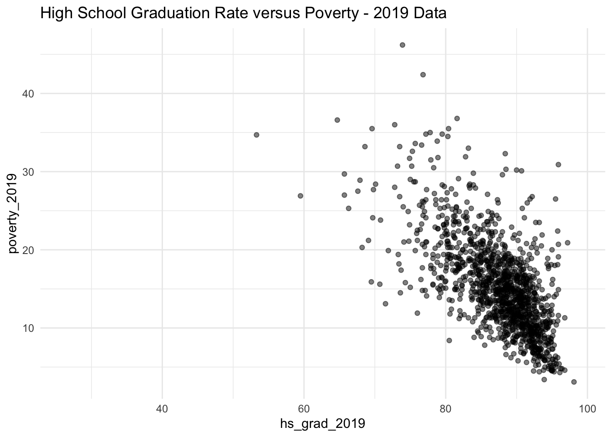
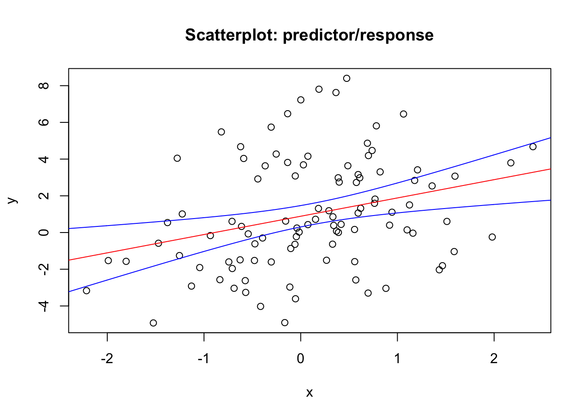
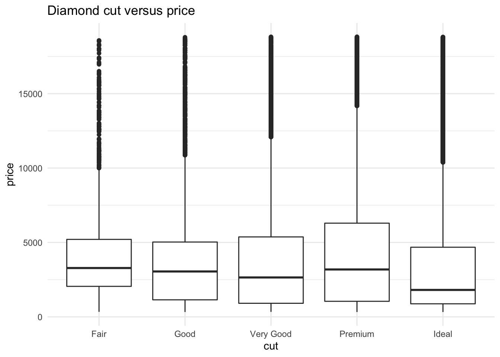
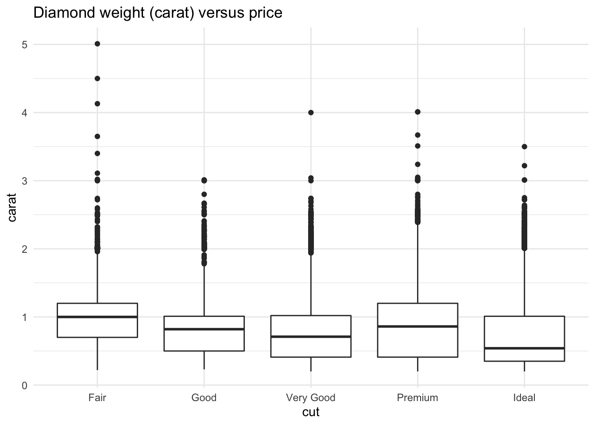
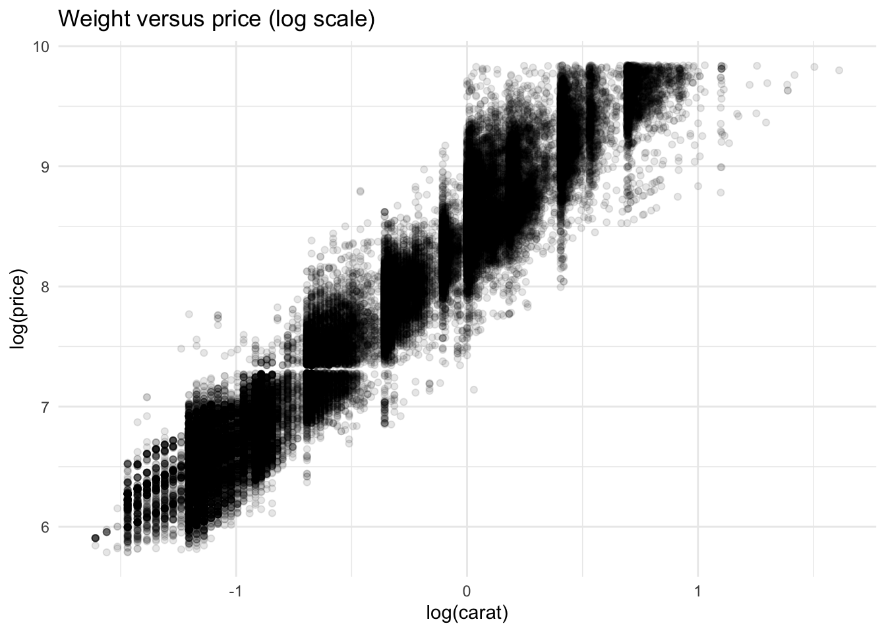
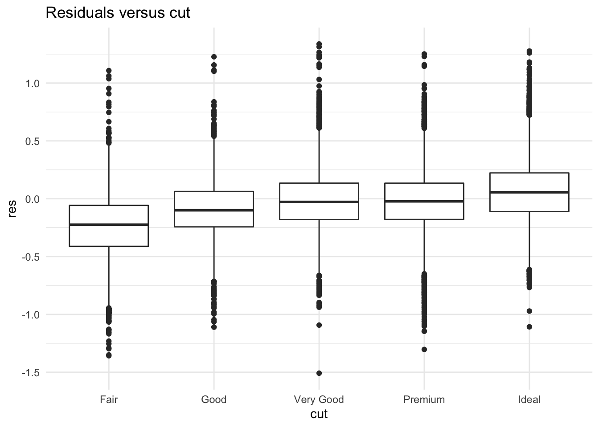

Chapter 3 Linear Regression
3.1 Estimation
Suppose we want to model a response variable \(Y\) in terms of some predictor variables, \((X_1, X_2, X_3)\). One very general form of the model would be:
\[\begin{equation} Y = f(X_1, X_2, X_3) + \epsilon \end{equation}\]
where \(f\) is some unknown function and \(\epsilon\) is the error. Usually the exact function \(f\) is unknown and we have to make assumptions about it. One such assumption is that \(f\) is a linear function, which implies the following model:
\[\begin{equation} Y = \beta_0 + \beta_1 X_1 + \beta_2 X_2+ \beta_3 X_3 + \epsilon. \end{equation}\]
In this model, \((\beta_0, \beta_1, \beta_2, \beta_3)\) are unknown parameters. Thus, the estimation problem involves trying to estimate this set of coefficients.
Although this model may seem restrictive and simple, it is an extremely useful tool for gathering insight about data. It also introduces fundamental concepts to more complex statistical/ machine learning methods.
Example
Let’s do a simple example regression analysis. We will use the county dataset from the openintro package to assess the linear association between the proportion of high school graduates in a country and the proportion of the county living in poverty.
| hs_grad_2019 | poverty_2019 |
|---|---|
| 88.5 | 15.2 |
| 90.8 | 10.4 |
| 73.2 | 30.7 |
| 79.1 | NA |
| 80.5 | 13.6 |
| 74.7 | NA |
A good first step to any analysis is to visually explore the data. For this particular case, it is hard to beat a scatterplot for visualization.
## Warning: Removed 1876 rows containing missing values (geom_point).
It seems like fitting a linear regression to this data is reasonable. To do so, we only need a simple function in R, lm. Let’s fit the model and see what we get.
| term | estimate | std.error | statistic | p.value |
|---|---|---|---|---|
| (Intercept) | 77.4447213 | 2.0066198 | 38.59462 | 0 |
| hs_grad_2019 | -0.7088124 | 0.0228897 | -30.96645 | 0 |
How can we write down this model? What is the interpretation?
Next, we will discuss where these estimates come from.
Estimation Details
Let’s briefly discuss optimization. Suppose we have the function
\[\begin{equation} f(x) = -x^2. \end{equation}\]
and we want to know the value of \(x\) that maximizes this function. How would we do this?
The estimation problem in linear regression is no different. Let’s consider the simple linear regression model
\[\begin{equation} y_i = \beta x_i + \epsilon_i. \end{equation}\]
Our estimate of \(\beta\), which we will call \(\hat{\beta}\), will be the value of \(\beta\) that minimizes the sum of squared differences between the observed and the predicted values. That is, it is the \(\beta\) that minimizes this function:
\[\begin{align} f(\beta) &= \sum_i (y_i - \hat{y}_i)^2 \\ &= \sum_i (y_i - \beta x_i)^2 \end{align}\]
What is this value?
3.2 Exercises 1
- Among counties with greater than 95% high school graduates, which county has the highest unemployment rate?
- Using the command
data(), find a dataset that interests you, generate a hypothesis regarding a linear association between two variables, and assess the hypothesis by first visualizing (using a scatterplot) and then fitting a linear regression model. - (Optional) Repeat the optimization analysis above for the model \(y_i = \beta_0 + \beta_1x_i\), taking partial derivatives and solving.
3.3 Inference
Last time, we discussed a few ways to estimate the slope coefficient in a linear regression model. This yields a point estimate. The other key ingredient for inference is to determine how much uncertainty there is in our estimate. For the case of \(\hat{\beta_1}\), we want to know how much this estimate varies from sample to sample for the specified sample size. That is, we want to know the variance of the estimate:
\[\begin{align} Var(\hat{\beta_1}). \end{align}\]
To find what this is, let’s just try to figure out the variance directly, using the analytic formula for \(\hat{\beta_1}\) in simple linear regression:
\[\begin{align} Var \bigg( \frac{\sum_{i=1}^n (x_i - \bar{x})(y_i - \bar{y})}{\sum_{i=1}^n (x_i - \bar{x})^2 } \bigg). \end{align}\]
To carry out this calculation, recall that \(\text{var}(cx) = c^2 \text{var}(x)\). Also, recall the model assumption of independence across observations. After carrying out this calculation, we can show that,
\[\begin{equation} Var(\hat{\beta_1}) = \frac{\hat{\sigma}^2}{(n-1) \hat{var}(x)} \end{equation}\]
How does variation in \(\hat{\beta}\) respond to changes in sample size? How about to variation in the predictor?
Before moving on, let’s write some code to make sure our calculations correspond with those generated by lm.
| Estimate | Std. Error | t value | Pr(>|t|) | |
|---|---|---|---|---|
| (Intercept) | 1.984 | 0.0329 | 60.29 | 0 |
| X | 3.006 | 0.03181 | 94.52 | 0 |
| Observations | Residual Std. Error | \(R^2\) | Adjusted \(R^2\) |
|---|---|---|---|
| 1000 | 1.04 | 0.8995 | 0.8994 |
## [1] 0.03180874In this case, we are able to obtain not only the variation of the estimate but also the distribution of the estimate as well as the test statistic,
\[\begin{align} T = \frac{\hat{\beta_1} - \beta}{\sqrt{\text{var}\beta}} \sim t_{n-2} \end{align}\]
This allows us to compute confidence intervals. For instance, if we want to compute a (1-\(\alpha\)) confidence interval, note that:
\[\begin{align} P(t_{\alpha/2} < T < t_{1-\alpha/2}) = (1-\alpha) \end{align}\]
Bootstrap
In more realistic scenarios, we may not be able to obtain analytic results for the variance of an estimator. Fortunately, there are some workarounds. One such method is the bootstrap. The bootstrap is incredibly simple and effective. Let’s denote our sample as \(\mathbf{X} = (X_1,\ldots,X_n)\) and the statistic as \(T(\mathbf{X})\). The algorithm consists two key steps. For \(i \in 1,\ldots,n\):
- Resample the original data (with replacement). This results in a new dataset, \(\mathbf{X^\star}\), that is the same size as the original data.
- Compute the desired statistic on the resampled data. This results in a number, \(s_i = T(\mathbf{X}^\star)\)
This results in a sample of statistics \(\mathbf{s}=(s_1, \ldots,s_B)\). We can then estimate the variance of the statistic as the sample variance: \(\text{var}(\mathbf{s})\).
Let’s first do a simple example before returning to linear regression. Suppose we would like to estimate the variance of the sample mean. Let’s write a bootstrap algorithm to do this.
## [1] 0.51801949 0.01611761Now, back to regression. Let’s use the same framework to estimate the variance of the slope coefficient.
## [1] 0.033100383.4 Exercises 3
Run the code below to simulate data from a gamma distribution. Generate a histogram and describe it (where is the mode? what is the skew?)
What is the relationship between the sample mean and median? What do you think is the relationship in the variability in these two sample statistics (i.e., if we were to draw another sample from this distribution, which one would change more on average)?
Using the bootstrap, generate a bootstrap sample of sample means (try to use the code above as little as possible). Use \(B = 10^4\). What is the mean and standard deviation of this sample?
Using the bootstrap, generate a bootstrap sample of sample medians (try to use the code above as little as possible). Use \(B = 10^4\). What is the mean and standard deviation of this sample?
Plot histograms of both bootstrap samples on one graphic. See hints on this page
Going back to the hypothesis you tested in exercise 1 (question 2), estimate the standard deviation of the slope coefficient using bootstrap. How does it compare with the output generated by
lm.(Challenge question) The central limit theorem (CLT) establishes that the distribution of the sample mean is approximately normal with mean equal to the population mean and variance equal to the population variance divided by the sample size (\(\sigma^2/n\)). How does the distribution of sample means generated in 3 compare with the distribution implied by the CLT? You will need to find the population mean and variance of the gamma distribution that we sampled from.
3.5 Matrix representation
Let’s define the following matrices,
\[A = \begin{bmatrix} 7 & 9\\ 1 & 4 \end{bmatrix} \qquad B = \begin{bmatrix} 2 & 1\\ 3 & 1 \end{bmatrix} \]
In R, input the values of a matrix by column using either matrix or array. For example, matrix \(A\) above is:
matrix(c(7,1,1,9,4,8,2,6,6), nrow = 3) or array(c(7,1,1,9,4,8,2,6,6), dim = c(3,3)). Matrix operations in R include:
- Matrix addition: \(A + B\),
A + B - Matrix multiplication: \(AB\),
A %*% B - Inverting a matrix: \(A^{-1}\),
solve(A) - Transposing a matrix: \(A^ \top\),
t(A)
Now let’s shift a little to working with ‘general’ matrices and construct expressions for some matrix operations. In particular, let’s work with the following matrices,
\[X = \begin{bmatrix} x_{11} & x_{12}\\ x_{21} & x_{22} \end{bmatrix} \qquad Y = \begin{bmatrix} y_{11} & y_{12}\\ y_{21} & y_{22} \end{bmatrix} \]
Back to linear regression. By representing our model in matrix notation, we can write our model as,
\[\begin{equation} Y = X \beta + \epsilon, \end{equation}\]
for the case where we have \(p\) predictors and \(n\) observations. In this case, the design matrix \(X\) has dimension \(n \times (p+1)\) and \(Y\) has dimension \(n \times 1\). Using this matrix representation of the model, it can be shown that the least squares estimate for \(\beta\) is:
\[\begin{equation} \hat{\beta} = (X^\top X)^{-1} (X^\top Y) \end{equation}\]
Additionally, the variance/ covariance for \(\hat{\beta}\) can be packaged up into a matrix:
\[\begin{equation} \hat{\beta} = \sigma^2 (X^\top X)^{-1} \end{equation}\]
For the case of SLR, the variance matrix for \((\hat{\beta_0}, \hat{\beta_1})\) is:
\[Var(\hat{\boldsymbol{\beta}}) = \begin{bmatrix} Var(\hat{\beta_0}) & Cov(\hat{\beta_0}, \hat{\beta_1} )\\ Cov(\hat{\beta_0}, \hat{\beta_1} ) & Var(\hat{\beta_1}) \end{bmatrix}\]
Furthermore, the matrix representation For the case of simple linear regression (SLR), is:
\[ \begin{bmatrix} y_1 \\ \vdots \\ y_n \end{bmatrix} \qquad = \begin{bmatrix} 1 & x_1 \\ \vdots & \vdots \\ 1 & x_n \end{bmatrix} \begin{bmatrix} \beta_0 \\ \beta_1 \end{bmatrix} + \begin{bmatrix} e_1 \\ \vdots \\ e_n \end{bmatrix} \]
3.6 Exercises 4
Let’s do some practice. For \(A, B\) defined above:
Exercises 4A2
- What is \(AB\). Compute by hand and verify with R.
- What is \(A^{-1}\). Compute by hand and verify with R.
- What is \(A^\top B\). Compute by hand and verify with R.
Exercises 4B
For \(X, Y\) defined above:
- What is \(X^{-1}\)
- What is \(X ^ \top\)
- What is \(XY\) (i.e., \(X\) times \(Y\); use \(\Sigma\) notation)
- What is \((XY)^{-1}\)
Exercises 4C
The following questions pertain to the simple linear regression (SLR) case in which the design matrix, \(X\), is:
\[ X = \begin{bmatrix} 1 & x_1 \\ \vdots & \vdots \\ 1 & x_n \end{bmatrix} \]
What is \(\sigma^2 (X^\top X)^{-1}\)? (write it out using \(\Sigma\) notation, similar to the last exercise set).
Take the lower right hand entry from the matrix above. Does it match what we got for \(Var(\hat{\beta_1})\) in the inference section below (a little bit of simplification is required)?
\[\begin{equation} Var(\hat{\beta_1}) = \frac{\hat{\sigma}^2}{(n-1) \hat{var}(x)} \end{equation}\]
- For the data below, compute (in R) the least squares estimate of \(\beta\) using the expression \(\hat{\beta} = (X^\top X)^{-1} (X^\top Y)\). Verify using
lm.
set.seed(1)
n = 100
X = matrix( c(rep(1,n), rnorm(n,0,1)), nrow = n ) # design matrix X
beta = c(1,1)
y = rnorm(n, mean = X %*% beta, sd = 3)- Finally, compute (in R) the variance matrix of \(\boldsymbol{\beta}\) using \(\hat{\sigma}^2 (X^\top X)^{-1}\). The \(\hat{\sigma}^2\) part is:
sigsq.hat = sum ( residuals ( lm(y~X-1) ) ^2 ) / (n-2)Verify that the square root of the diagonal entries of the variance matrix (\(\hat{\sigma}^2 (X^\top X)^{-1}\)) equal the coefficient standard error estimates from lm, which you can find using the summary function with your fit model as the argument.
Though not necessary, you may find the function diag to be useful in extracting the diagonal entries of a matrix.
3.7 Prediction
Suppose we have fit a linear regression model that predicts how much sales a certain product will generate at various price points. Your boss approaches you with a new potential price that was not observed in the data used to fit the model. Let’s call this value \(x_p\). She asks you for a prediction of the sales amount if the price is \(x_p\). Let’s call this value \(\hat{y}_p\). We can provide a point estimate as,
\[\begin{equation} \hat{y}_p = \hat{\beta}_0 + \hat{\beta}_1 x_p. \end{equation}\]
How much uncertainty is there in this estimate? To find out, we need to find the variance of the estimate. That is, we need,
\[\begin{equation} Var( \hat{\beta}_0 + \hat{\beta}_1 x_p ). \tag{3.1} \end{equation}\]
Recall that the coefficients depend on \(y\) and are, therefore, random variables. To find the variance of the sum of two random variables, recall that for random variables \(X, Y\),
\[\begin{equation} Var( X + Y ) = Var(X) + Var(Y) + 2 Cov(X,Y). \end{equation}\]
A slight modification of this result that will allow us to evaluate (3.1) is:
\[\begin{equation} Var( X + cY ) = Var(X) + c^2 Var(Y) + 2 c Cov(X,Y), \end{equation}\]
where \(c\) is a constant. Plugging in \(\hat{\beta}_0\) for \(X\) and \(\hat{\beta}_1\) for \(Y\), we get:
\[\begin{equation} Var( \hat{\beta}_0 + \hat{\beta}_1 x_p ) = Var(\hat{\beta}_0) + x_p^2 Var(\hat{\beta}_1) + 2 x_p Cov(\hat{\beta}_0, \hat{\beta}_1), \end{equation}\]
Using this expression, we can formulate a rough confidence interval for \(\hat{y}_p\) as,
\[\begin{equation} \hat{y}_p \pm 2 \times \sqrt{ Var( \hat{\beta}_0 + \hat{\beta}_1 x_p ) } \tag{3.2} \end{equation}\]
There is nothing special about \(x_p\). We can compute this confidence interval for any value of the predictor variable. Does the width of this band depend on \(x\) at all or is the margin of error constant? Let’s explore that in the next exercise.
3.8 Exercises 5
The goal of this exercise is to generate the least squares line and confidence bands as shown in the plot below. The data used is the data generated in question 3 of exercises 4C. In other words, the end goal of the exercise is to replicate the plot below.
To do that, we need to compute (3.2) for a range of \(x\) values. Here are some steps to achieve this:
- Let’s first generate the red line in the plot below. This is the least squares line. To generate this line, first generate a sequence of x-values (using the
seqfunction). The range of the sequence should correspond with the range of observed values of the predictor variable. For example,
xr = seq(-9,9, by = 0.01)Then, for each \(x\) in the sequence, generate a predicted \(y\) value (i.e., \(\hat{y} = \hat{\beta_0} + \hat{\beta_1}x\)). You can add this curve to your scatterplot by first generating the scatterplot (plot(X[,2], y)) and then adding your line using the lines function. The first argument to lines will be the \(x-\)values (xr if you used the code above) and the second will be a sequence of \(\hat{y}-\)values (which must be the samem length as xr).
A perhaps simpler method would be to use the abline function; however, using lines corresponds with the strategy that follows for the confidence bands.
Next, create a function that computes (3.1), where \(x_p\) is the function argument. Use this function for each of the \(x\) values in the sequence generated above. Use this function to obtain the standard error of the estimate for each of the \(x\) values in your \(x\)-sequence.
Once you have completed the steps above, you should have a prediction and standard error for each value in the range of your \(x-\)sequence (
xrif you used the code above). The top blue curve is the prediction + 2 stanardard errors and the bottom curve is the prediction - 2 standard errors. You can again use thelinesfunction to add these additional curves.Where are the confidence bands widest? Why does this make intuitive sense?

3.9 Diagnostics
The flip-side of predictions are residuals. The predictions tells you the pattern that the model has captured, and the residuals tell you what the model has missed. The residuals are just the distances between the observed and predicted values that we computed above.
3.9.1 Residuals as powerful EDA tool
Suppose we have a dataset of diamonds and we would like to assess the relationship between the cut of the diamond and it’s price.

Judging from this plot, there doesn’t appear to be much of a relationship between cut and price. Maybe this is because the higher quality cuts tend to have smaller weights.

There appears to be some relationship here between cut and carat, with higher quality cuts being comprised of lower weight diamonds. There is also a strong relationship between carat and price, as seen below:

We can explore the relationship between cut and price by exploring the residuals of the model that uses only carat as a predictor and seeing how these residuals vary across cuts.

3.10 Exercises 6
Explore the relationship between clarity and price in the diamonds dataset using residuals (from the linear model fit using log(price) as a response, log(carat) and cut as predictors). What are your conclusions?
Install the gapminder package
install.packages(“gapminder”)and call it into your workspace usinglibrary(“gapminder”). This loads a dataset named gapminder. Also uselibraryto call the tidyverse package into your workspace.Use the
filterfunction (or other preferred method) to filter your dataset to the most recent year of data (2007) for each country.Using the filtered dataset, fit a linear regression model with lifeExp as the dependent variable and gdpPercap as predictor.
Examine the residuals from the model fit in 4 by continent. What is your interpretation?
Expand your model as necessary (add predictors) and examine a residual plot of fitted values versus residuals. What is your interpretation?